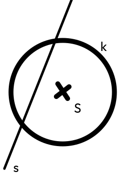
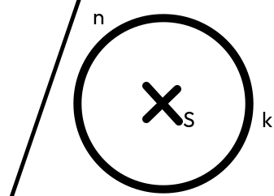
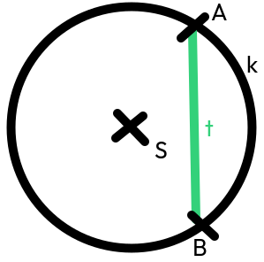
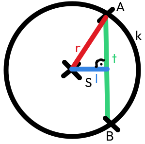
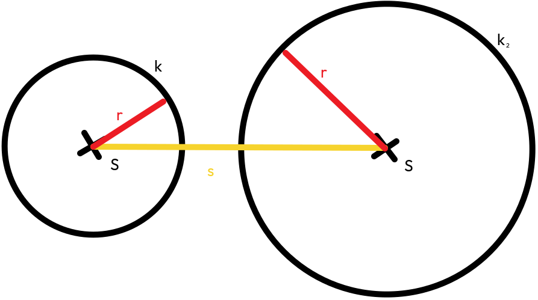
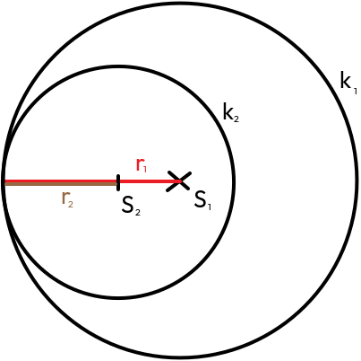
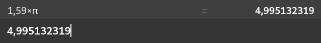

Kruhy a kružnice
Kruh
- je množina bodů, které jsou od středu kružnice ve stejné a menší vzdálenosti
Kružnice
- je množina bodů, které jsou od středu kružnice ve stejné vzdálenosti
Vzájemná poloha přímky a kružnice
Sečna
Má společné 2 body.
Tečna

Má společný 1 bod.
Nesečna
Nemá společné body.
Tětiva
Je úsečka spojující 2 body kružnice.
Dá se díky ní dopočítat poloměr, vzdálenost od středu, nebo polovinu délky tětivy pomocí Pythagorovy věty.
Vzájemná poloha 2 kružnic
Středná - úsečka mezi dvěma středy kružnic
Žádný společný dotyk
{kind=link}
|S₁S₂| ≠ 0 mm
|S₁S₂| > r₁ + r₂

|S₁S₂| < r₁ + r₂
Jeden společný bod
{kind=link}
vnitřní dotyk - kružnice jsou v sobě
|S₁S₂| = r₁ - r₂
|S₁S₂| ≠ 0 mm

vnější dotyk - kružnice jsou vedle sebe
|S₁S₂| = r₁ + r₂
|S₁S₂| ≠ 0 mm
Dva společné body

|S₁S₂| < r₁ + r₂
|S₁S₂| ≠ 0 mm
Thaletova kružnice
Thaletova kružnice je kružnice, která prochází středy stran pravoúhlého trojúhelníku.

Rýsování tečen z bodu mimo kružnici

Obvod kruhu a délka kružnice
obvod kruhu: 5 cm
průměr kruhu: 1,59 cm
když vynásobíme průměr s π (pi), výjde nám obvod
*zaokrouhlíme
Číslo pi je nekonečné, ale neopakuje se (0,333333...), má hodnotu příbližně 3,14....
Obsah kruhu
Krybychom rozdělili kruh na ∞ částí, vznikl by po součnu obdélník (strana krát strana).
{kind=link}
Vzorec: S = πr²